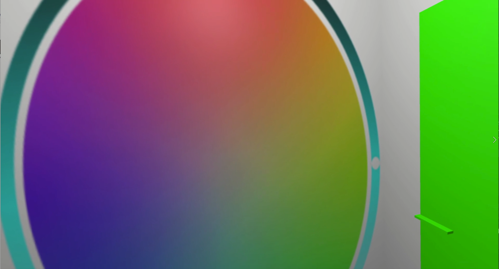

Color Changing Demo
I explored how colors are seen in VR and how our perception of things change when certain parts of a color cannot be seen anymore. In an experiment, I used Post Processing in Unity to toggle the three primary colors red, blue and green on and off. This was a proof of concept where blocks represented glasses that make a color visible when put on.